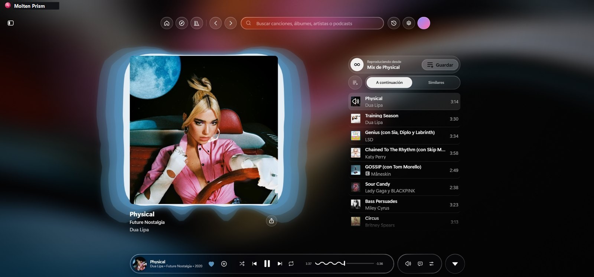
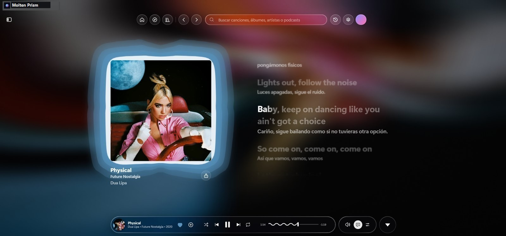
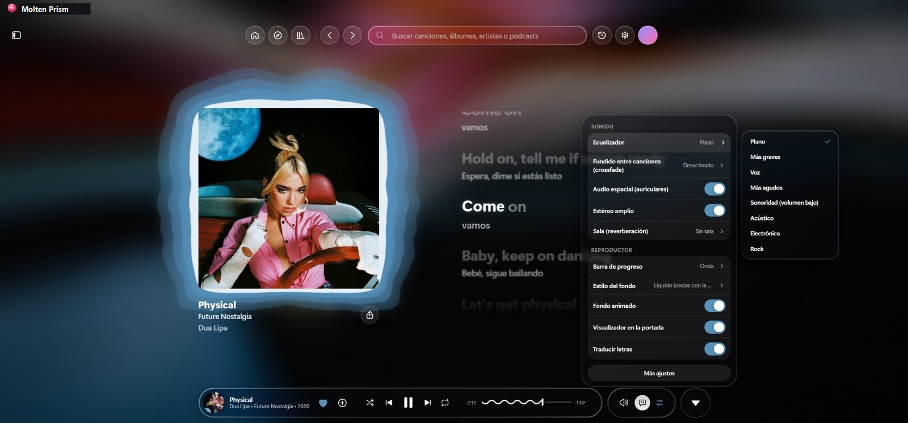
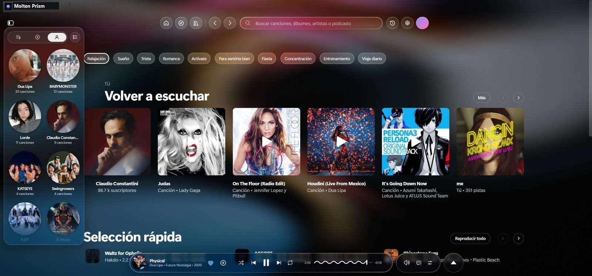
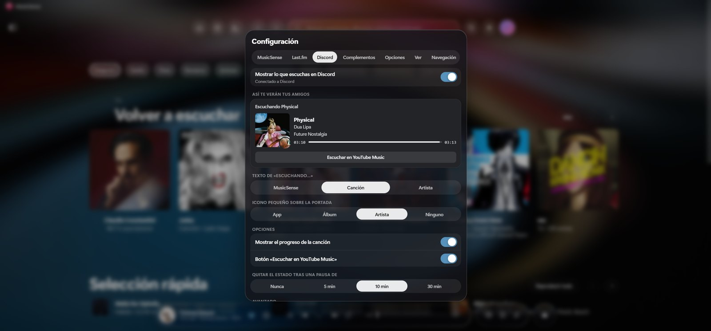
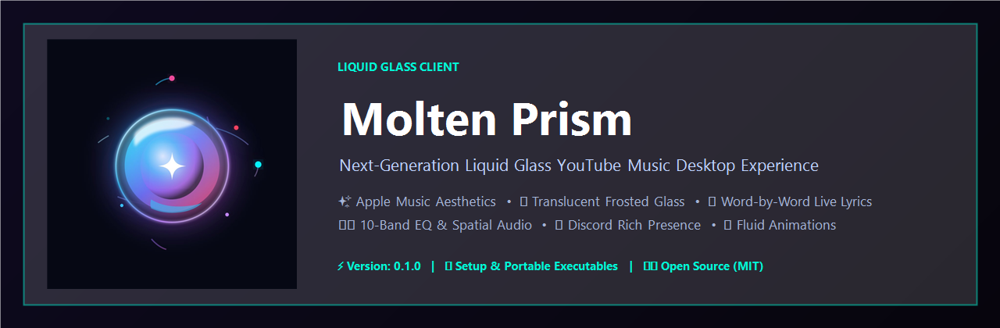

Sound Refracted Through Liquid Glass.
Experience an organic desktop sound client reimagined with real-time fluid physics, translucent caustics, and procedural harmonic binaural synthesis.
Vitreous Horizon
Ambient LofiMolten Prism • Liquid Soundscape Vol. 1
Live Web Player & Station Stream
Stream audio seamlessly right in your browser through high-fidelity YouTube streams, curated Molten prism streams, or direct audio frequencies.
Visual UI/UX Experience
Inspect real desktop screenshots showcasing iOS 26 liquid glass aesthetics, word-by-word shining synced lyrics, and acoustic spatial suites.

Vitreous Player Deck
Circular dynamic FFT visualizer around rotating high-res album art with glass caustics.

Word-by-Word Lyrics
Dynamic glowing typography with sustained-note aura and synchronized inline subtitles.

Vitreous Equalizer & Reverb
10-band studio frequency control, spatial headphone expansion, and custom room simulation.

Floating Library Grid
Fast playlist browsing with floating capsule navigation, artist collections, and history.

Discord & Last.fm Sync
Customizable live status with cover art, track scrobbling, and one-click friend listening.

Prismatic Aesthetics
iOS 26 liquid design language with high refractive indices, fluid dynamics, and blur caustics.
Interactive Prismatic Synthesizer Pad
Move your cursor across the liquid glass surface to refract binaural harmonic frequencies and spawn chromatic waves.
Crafted with High-Index Vitreous Physics
Every element reflects, bends, and shimmers according to real-time pointer physics and harmonic audio spectra.
Real-time Fluid Dynamics
Canvas-driven fluid simulations with dynamic velocity damping, organic color diffusion, and smooth procedural caustics.
Chromatically Dispersed UI
Multi-layered frosted glass filters simulate high-index prism dispersion, casting shimmering neon fringes along borders.
Native Web Audio Core
Real-time FFT audio visualizer, polyphonic dual-oscillator drone generator, and binaural audio stages running without external bloat.